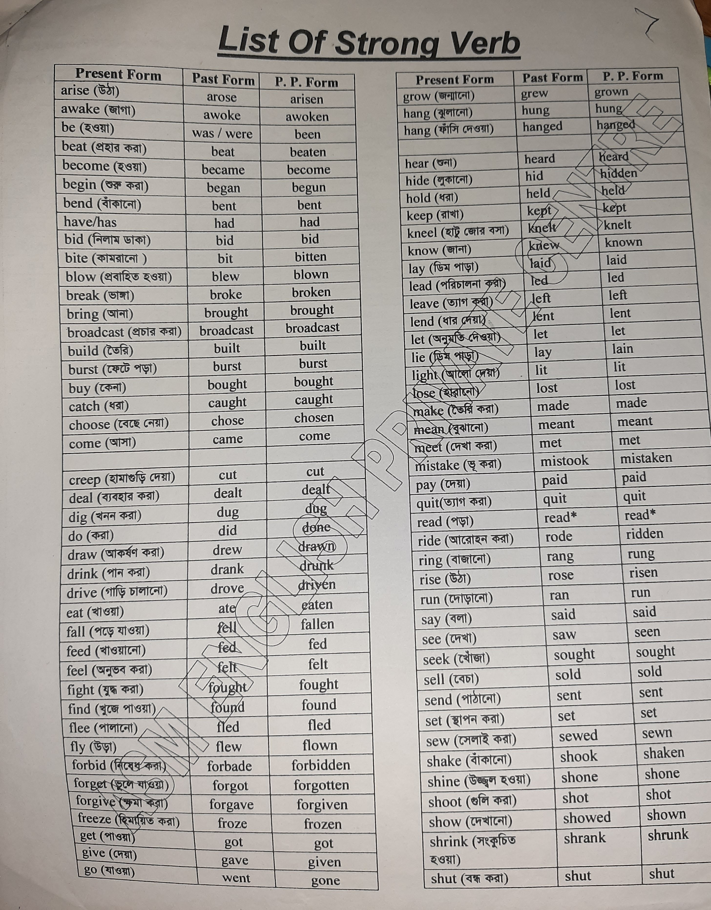
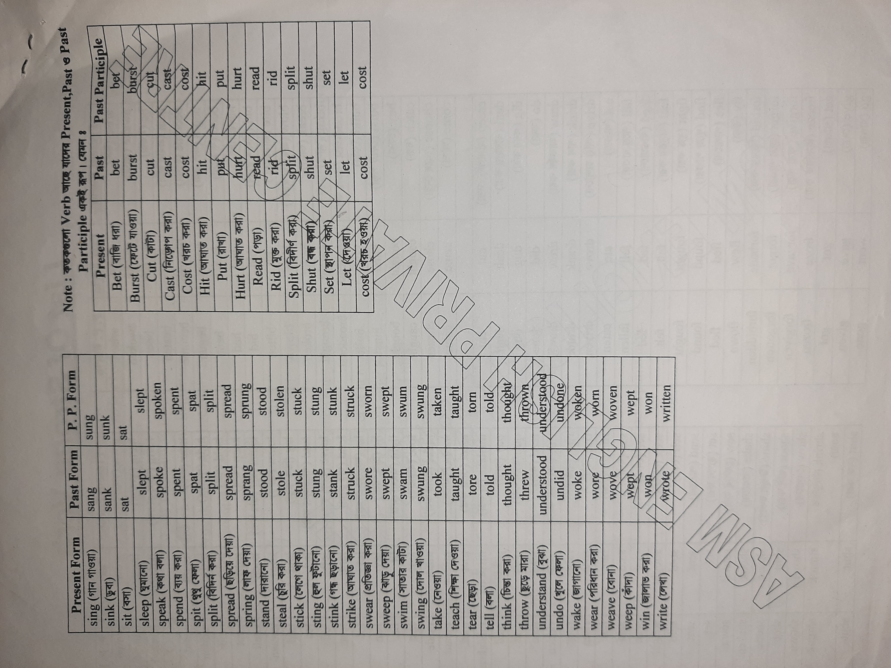

Strong Verbs
| Serial No. |
Present Form |
Past Form |
P. P. Form |
Bengali Meaning |
| 1 |
arise |
arose |
arisen |
উঠা |
| 2 |
awake |
awoke |
awoken |
জাগানো |
| 3 |
be |
was/were |
been |
হওয়া |
| 4 |
beat |
beat |
beaten |
পেটানো |
| 5 |
begin |
began |
begun |
শুরু করা |
| 6 |
bend |
bent |
bent |
মোড়ানো |
| 7 |
have/has |
had |
had |
থাকা |
| 8 |
bid |
bid |
bidden |
নির্দেশ দেওয়া |
| 9 |
blow |
blew |
blown |
পড়া |
| 10 |
break |
broke |
broken |
ভাঙা |
| 11 |
bring |
brought |
brought |
নিয়ে আসা |
| 12 |
broadcast |
broadcast |
broadcast |
প্রচার করা |
| 13 |
build |
built |
built |
নির্মাণ করা |
| 14 |
burst |
burst |
burst |
ফেটে যাওয়া |
| 15 |
catch |
caught |
caught |
ধরা |
| 16 |
choose |
chose |
chosen |
বাছাই করা |
| 17 |
come |
came |
come |
আসা |
| 18 |
cut |
cut |
cut |
কাটা |
| 19 |
deal |
dealt |
dealt |
চুক্তি করা |
| 20 |
dig |
dug |
dug |
খোঁড়া |
| 21 |
do |
did |
done |
করা |
| 22 |
draw |
drew |
drawn |
আঁকা |
| 23 |
drink |
drank |
drunk |
পান করা |
| 24 |
drive |
drove |
driven |
চালানো |
| 25 |
eat |
ate |
eaten |
খাওয়া |
| 26 |
fall |
fell |
fallen |
পড়া |
| 27 |
feed |
fed |
fed |
খাওয়ানো |
| 28 |
feel |
felt |
felt |
অনুভব করা |
| 29 |
fight |
fought |
fought |
যুদ্ধ করা |
| 30 |
find |
found |
found |
খুঁজে পাওয়া |
| 31 |
flee |
fled |
fled |
পালানো |
| 32 |
fly |
flew |
flown |
উড়া |
| 33 |
forbid |
forbade |
forbidden |
নিষেধ করা |
| 34 |
forget |
forgot |
forgotten |
ভুলে যাওয়া |
| 35 |
forgive |
forgave |
forgiven |
মাফ করা |
| 36 |
freeze |
froze |
frozen |
জমা |
| 37 |
give |
gave |
given |
দেওয়া |
| 38 |
go |
went |
gone |
যাওয়া |
| 39 |
grow |
grew |
grown |
বড় হওয়া |
| 40 |
hang |
hung |
hung |
লটকানো |
| 41 |
hang |
hung |
hangod |
লটকানো |
| 42 |
hear |
heard |
heard |
শোনা |
| 43 |
hide |
hid |
hidden |
লুকানো |
| 44 |
keep |
kept |
kept |
রাখা |
| 45 |
kneel |
knelt |
knelt |
গোড়া |
| 46 |
know |
knew |
known |
জানা |
| 47 |
lay |
laid |
laid |
রাখা |
| 48 |
lead |
led |
led |
নেতৃত্ব দেওয়া |
| 49 |
lend |
lent |
lent |
ঋণ দেওয়া |
| 50 |
lie |
lay |
lain |
শুয়ে থাকা |
| 51 |
lose |
lost |
lost |
হারানো |
| 52 |
mean |
meant |
meant |
অর্থ করা |
| 53 |
meet |
met |
met |
মিলিত হওয়া |
| 54 |
mistake |
mistook |
mistaken |
ভুল বোঝা |
| 55 |
pay |
paid |
paid |
পেমেন্ট করা |
| 56 |
quit |
quit |
quit |
ছেড়ে দেওয়া |
| 57 |
read |
read |
read |
পড়া |
| 58 |
ride |
rode |
ridden |
চালানো |
| 59 |
rise |
rose |
risen |
উঠা |
| 60 |
run |
ran |
run |
দৌড়ানো |
| 61 |
say |
said |
said |
বলা |
| 62 |
see |
saw |
seen |
দেখা |
| 63 |
seek |
sought |
sought |
খোঁজা |
| 64 |
sell |
sold |
sold |
বিক্রি করা |
| 65 |
set |
set |
set |
স্থাপন করা |
| 66 |
sew |
sewed |
sewn |
সেলাই করা |
| 67 |
shake |
shook |
shaken |
কাঁপানো |
| 68 |
shine |
shone |
shone |
চকচকে করা |
| 69 |
shoot |
shot |
shot |
গুলি করা |
| 70 |
show |
showed |
shown |
দেখানো |
| 71 |
shrink |
shrank |
shrunk |
সঙ্কুচিত হওয়া |
| 72 |
shut |
shut |
shut |
বন্ধ করা |
Strong Verb

